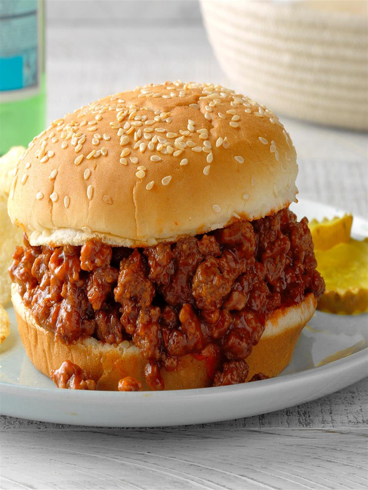

Sloppy Joes

Description:
I’ve always been a fan of classic sloppy joes. There’s something so innately
satisfying about the sweet and savory combination and messiness of it all! And
I know you all love them too, since I’ve been getting a lot of requests for
sloppy joe recipes.
I’ve made a LOT of sloppy joe recipes lately, trying to come up with the perfect
one. Some were too sweet, others too spicy. Well guys, I finally got it. The
perfect balance. This sloppy joe recipe is sweet, tangy, zesty and savory, with
the perfect texture and consistency.
Ingredients:
- 1 Tbsp butter
- 1 tsp olive oil
- 1 lb. ground beef
- 1/3 green bell pepper, minced
- 1/2 large yellow onion, minced
- 3 cloves garlic, minced
- 1 Tbsp tomato paste
- 2/3 cup ketchup
- 1/3 cup water
- 1 Tbsp brown sugar (or less if you prefer
- 1 tsp yellow mustard
- 3/4 tsp chili powder
- 1.2 tsp Worcestershire sauce
- 1/2 tsp kosher salt
- 1/4 tsp red pepper flakes (optional)
- 1/4 tsp black pepper
- Dash of hot sauce (optional
Steps:
- Heat butter and oil in a large skillet over MED/MED-HIGH heat. Add beef and
brown, breaking apart into crumbles as it cooks, about 5 minutes. Transfer
to colander and drain.
- Add onion and bell pepper to same skillet and cook 2-3 minutes, until soft.
Add garlic and cook 30 seconds or so, until fragrant. Add beef back to the
skillet and add tomato paste. Stir well.
- Add ketchup, water, brown sugar, mustard, chili powder, Worcestershire sauce,
salt, red pepper flakes (if using), and black pepper. Stir well to combine.
- Cook over MED heat for 10-15 minutes, until mixture has thickened to your
liking. Remove from heat and serve over toasted buns.